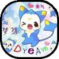
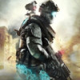
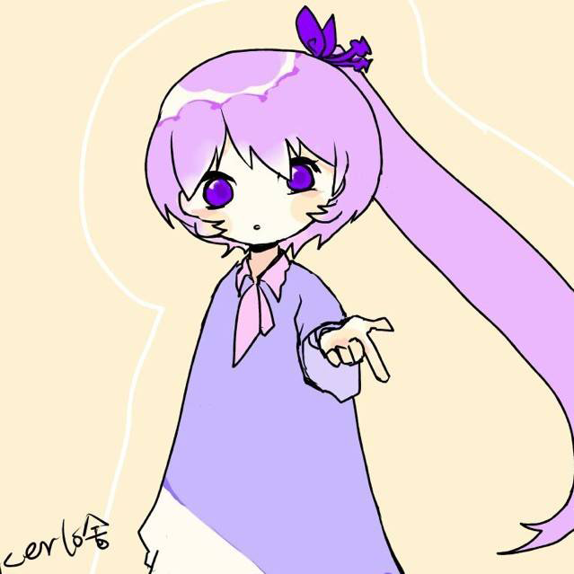

老秋風
團隊負責人
PHP, VB, C++入門, Arduino, Linux運維
形隨意動官網工程師. 可能是群裏除了流星以外一個比較正經的了. 2013年創建WeiSuoStudio, 至今全程參與形隨意動60%以上的項目
Wey(又稱指南針)
副組長競選人
VB, Arduino, C++, Idea
形隨意動2017年度積極分子. 2015年加入. 2016-2017年開始活躍, 是一個很有創意和想法的人. 但是希望以後可以考慮一下技術實現的可能性

沈默
活躍成員
PHP入門, 前端入門, 51單片機入門, VB入門
形隨意動2017年"啦啦啦"獎得主. 2015年加入. 目前技術學習停滯, 不過忙於學業, 可以理解, 希望以後可以有時間一起參與團隊項目
糖糖
活躍成員
C#, VB, XAML, Arduino, 樹莓派, Linux運維入門
形隨意動2017年"賣萌"獎得主. 2016年加入. 長期處於活躍+學習狀態. 目前學習C#, 異教徒(因為喜歡WindowsPhone)
小小白
活躍成員
C++入門, 黑客技術入門
形隨意動2017年"認識大佬最多"獎得主. 2016年中加入, 長期處於活躍狀態. 認識非常多的大佬, 懂得一些免殺+DDOS技術.

流星殘影
超活躍成員
PHP, 前端, Linux運維
半個大佬. 2014-5年加入(來自最初的形隨意動主機), 常年鉆研網頁技術和在線攻擊防禦. 參與了形隨意動大約40%的項目研發
幻殺
成員
C++
2015-6年加入形隨意動, 一直鉆研C++, 也非常關心形隨意動的成長, 同時擔任設計師的職位

Aomi Raku 洛
成員
平面設計 / 文案 / VB
2018年加入形隨意動. 糖的朋友, 喜好包括賣萌等一系列和糖相近的動作
葫蘆娃
成員
Java / 網頁
2018年6月加入形隨意動. 是壹個想搞事情, 奈何技術受限, 於是努力學習的人.
Powered by 形隨意動©2013-2018, all rights reserved